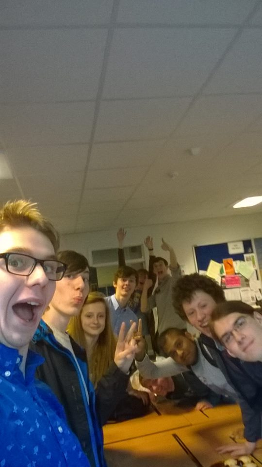
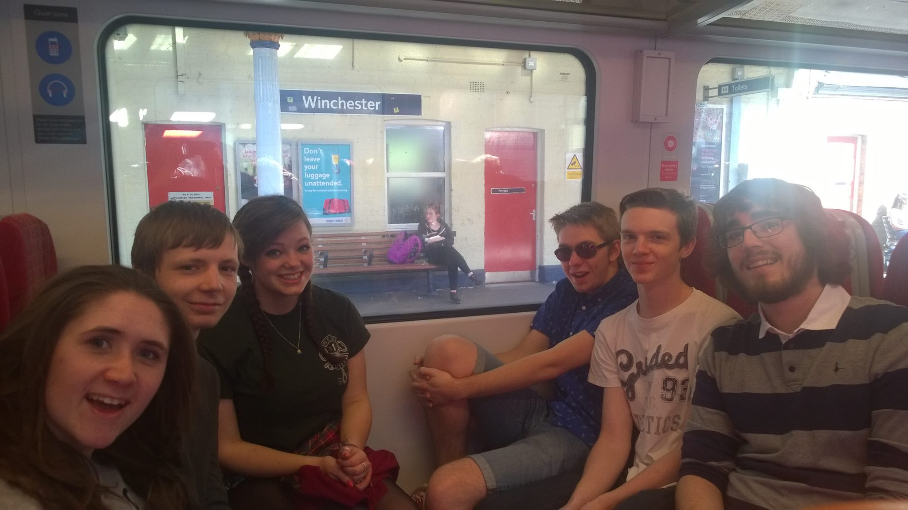
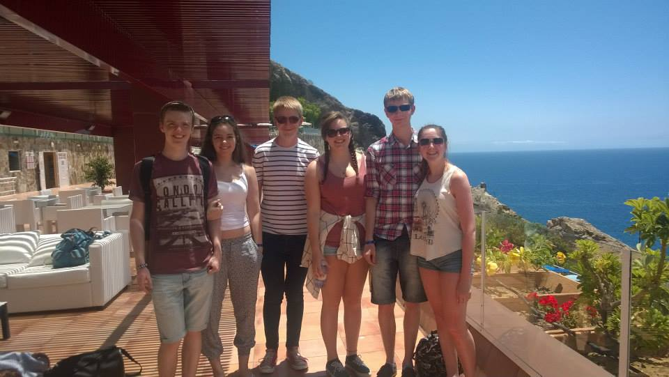
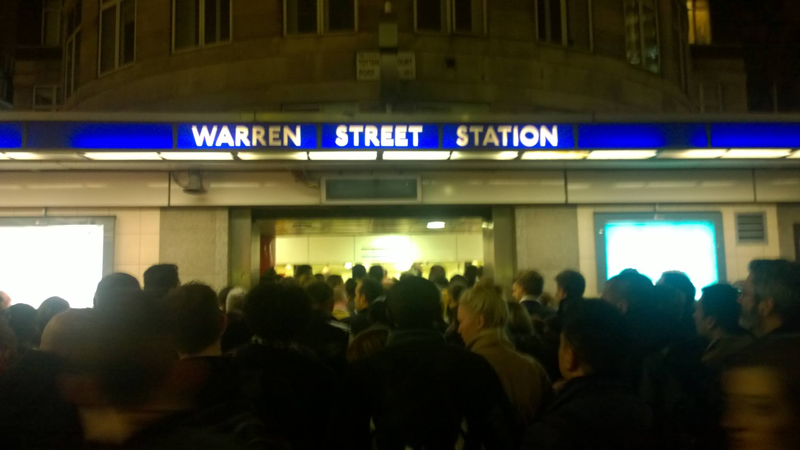
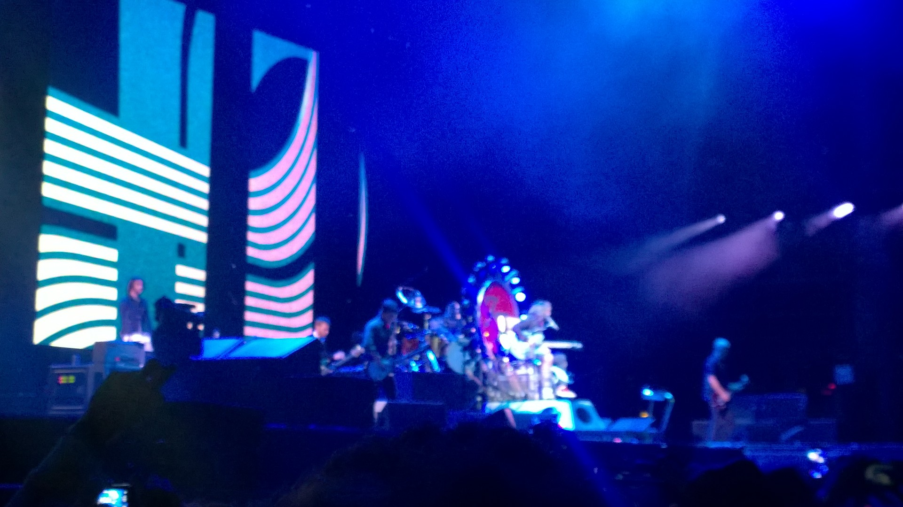

It's not just me, is it? As I sit here, sipping some badly made cocktails (I can't make an El Dorado to save my life), I can't ignore the fact that this year has gone really, really quickly. This time last year I remember thinking to myself that the next twelve months could either go pretty well or horribly wrong, and thankfully it's gone pretty well.
January was spent being grumpy that I didn't get a UCAS offer for Oxford, although I was incredibly happy that I got an offer from UCL. Maybe it was just winter blues. Who knows. I was also in the middle of my computing final project, so I had just spent that Christmas doing UI implementations and unit testing. I did get a fantastic new laptop to program and hack on, so I was occupied in a good way.
February was a pretty forgetful month, as did March. I think that the fact that they are both cold, and the fact that February is short, that we try and forget about them as much as possible. Do you know many people with a birthday in February? Thought not.
People remember April though because that's when you have to do tax things by. You come out of hibernation on the first of April and the weather is normally starting to get less Siberian by then as well. I for one had the 200 page "project report" to work through, as well as countless maths exercises on complex numbers, multivariate calculus and other stuff that may come in useful at some point in the future... right?
May is short for "Mayday!", because that's what you'll be shouting when you realise that your exams begin this month. I had completed about one tree's worth of past exam papers during that month, and also had my final lessons. We had some pretty amazing selfies taken:


I had the displeasure of having the last exam in college, COMP3, but then had the actual pleasure of flying to Gran Canaria with some of my besties just two days later. Sadly I didn't get the window seat on the flight out, but trivial physics never stop me:
Gran Canaria was fantastic, would definitely come back again in the future. But since I am not a travel blog, I shall only show photos. (Wait, what kind of blog even is this?)

What happened in July? Not a lot to be honest, there was a lot of worrying and fretting over what was to come over the next couple of months...
I finally got to see my fate in August, when the A-level results were released. I didn't sleep a wink the night before, so I was too tired, worried and hungry. Thankfully my results were more that what I wanted (hence why I'm at UCL now!) I also found out that my computing result was in the top 50 in the whole country which I was ecstatic about! Unless I was 50/50. But they never said so it's okay. Maybe the lure of the holiday encouraged me in the exam? Maybe it was sheer luck? Who knows, it's over now. It meant that I got the chance to visit the offices of Netcraft, an web security service, and get a rather durable rucksack from them - the first of many pieces of company swag I would come to accumulate during my time as a student. Oh, and matthewb.me (now mbell.me) finally got registered as my domain name.
Time ticked oh so very fast round to September, which was massive for me for two reasons. The first was that I was moving into the city, which is pretty scary if you've been living in a village for most of your life. Thankfully, I've met so many lovely people both on my corridor and in my course so I definitely feel like I've made the right choice in coming here. Even if I do still miss my old friends (if you are reading this, drinks?)

Oh, also I finally got to see Foo Fighters live. A pretty outstanding few hours considering that I've been listening to Dave Grohl's voice from the cradle.

In October, I experienced my first ever hackathon and I'm now a little bit hooked. Making things is fun! Additionally, Me and a couple of people from my course went to Facebook headquarters to win a competition (well, second place but we won prizes so there). Hacking is fun! Oh, and also I went veggie during this month (and still am).
In November, nothing really happened again apart from a lot of work and also another hackathon in Nottingham. Enjoy this picture of us hacking.
6 hours in and hacking is in the air! #HackNotts pic.twitter.com/Urg8O5rbzd
— HackNotts (@HackNotts) November 28, 2015Oh, and since when did the Met Office start picking storm names? At least pick something menacing.
Stay safe people, watch out for storm #Barney pic.twitter.com/gYANvmA1O4
— Michael Pattinson (@MikePattinson) November 17, 2015In December, I finally got a haircut.
So yeah, 2016, I'm sorry. You'll probably disappoint me but I won't be mad. 2015 is going to be pretty hard to top.